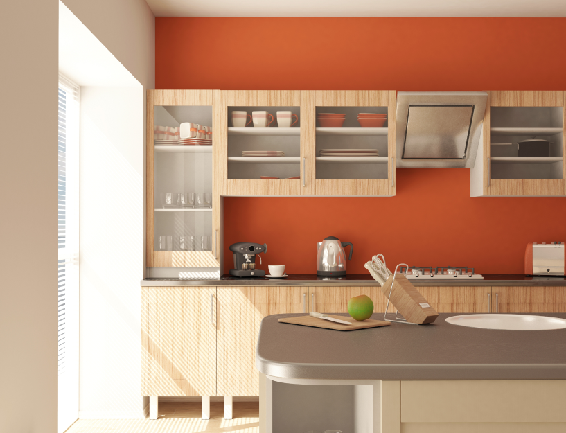

Bienvenidos a mi perfil les mostrare mis trabajos
Mi nombre es X y soy un apasionado constructor con más de una década de experiencia en el campo. Cada proyecto es un lienzo en blanco para mí, una oportunidad para dar vida a estructuras que perdurarán en el tiempo. Desde la primera excavación hasta el último retoque, cada paso de la construcción es un desafío que abrazo con entusiasmo. Mi satisfacción radica en ver cómo las ideas cobran forma, cómo los cimientos se convierten en sólidas bases y cómo las estructuras se erigen hacia el cielo. La construcción es un arte en constante evolución, y estoy comprometido a mantenerme al tanto de las últimas tendencias y tecnologías para ofrecer resultados de alta calidad.
Descripcion de trabajos realizados e imagenes
Casa aislada
Recientemente, tuve el privilegio de liderar una emocionante renovación residencial completa. El desafío inicial era transformar una antigua casa en un hogar moderno y funcional. Trabajando en estrecha colaboración con un equipo de expertos, demolimos paredes interiores, instalamos ventanas de gran tamaño para inundar de luz natural el espacio y creamos un atractivo patio trasero. Mi atención obsesiva a los detalles se reflejó en cada aspecto del proyecto, desde la elección de materiales de alta calidad hasta la meticulosa instalación de azulejos. El resultado final fue una casa impresionante y funcional que superó las expectativas del cliente y reafirmó mi pasión por la construcción y la excelencia en el trabajo

Reparación y Pintura
Recientemente, llevé a cabo una reparación y renovación sorprendente en una pared interior. La superficie estaba dañada y en desuso, pero mi experiencia en trabajos de reparación me permitió abordar el problema de manera efectiva. Después de un minucioso proceso de preparación, restauré la pared a su estado original, eliminando cualquier imperfección y asegurando que estuviera completamente lisa y lista para la transformación. Luego, aplicamos una capa de pintura azul vibrante que inmediatamente cambió la estética del espacio. El resultado final fue una pared impecable y refrescante que añadió un toque de estilo y vitalidad a la habitación.

Pintada Habitacion
Recientemente, emprendimos un emocionante proyecto de renovación en una encantadora casa de campo que requería una renovación completa en su interior. La casa, que anteriormente mostraba signos de desgaste y envejecimiento, se transformó en un oasis de frescura y modernidad. Comenzamos por preparar las superficies, eliminando cuidadosamente cualquier rastro de desgaste y asegurándonos de que las paredes estuvieran lisas y listas para recibir una nueva vida. Luego, aplicamos una paleta de colores cuidadosamente seleccionada que aportó luminosidad y amplitud a cada habitación.

Baño
Hace poco, nos embarcamos en un emocionante proyecto de renovación para transformar un baño que, en su estado anterior, parecía anticuado y desgastado. Con un enfoque en la modernización, comenzamos por despejar el espacio y retirar los elementos obsoletos. Luego, incorporamos un diseño contemporáneo que resaltó la funcionalidad y el estilo. Los azulejos viejos y descoloridos fueron reemplazados por elegantes opciones de porcelana, creando un aspecto limpio y lujoso.

Cocina
La cocina es el corazón de cualquier hogar, y esta no es una excepción. Este espacio ha sido cuidadosamente diseñado y renovado para combinar funcionalidad y elegancia. Los gabinetes de estilo contemporáneo ofrecen un amplio espacio de almacenamiento, mientras que la encimera de cuarzo blanco pulido agrega un toque de lujo. Los electrodomésticos de acero inoxidable de última generación facilitan la preparación de comidas gourme
Info extra
Queremos expresar nuestro más sincero agradecimiento por tomarse el tiempo de explorar nuestros proyectos y trabajos. Cada proyecto que emprendemos es el resultado de dedicación, creatividad y pasión por lo que hacemos. Desde el diseño y construcción de hermosas casas hasta la renovación de espacios interiores y exteriores, nuestro objetivo es superar las expectativas y crear lugares que inspiren y brinden comodidad. Su interés en nuestro trabajo significa mucho para nosotros, y esperamos que hayan encontrado inspiración en lo que hemos compartido. Siempre estamos dispuestos a escuchar sus ideas y necesidades, y esperamos tener la oportunidad de trabajar juntos en futuros proyectos.

8 Comentarios
Georgia Reader Reply
¡Wow! Los proyectos de Laura Sofia son realmente impresionantes. ¡Espero con ansias ver más de su trabajo en el futuro!
Aron Alvarado Reply
Son trabajos buenos con muchos detalles y calidad buena.
Lynda Small Reply
Me quedé impresionado por la calidad y atención al detalle en el trabajo de [Nombre de la Constructora]. Han transformado casas y espacios de una manera asombrosa. ¡Definitivamente recomendaría sus servicios a cualquiera que busque calidad y estilo en la construcción!
Sianna Ramsay Reply
¡Amables palabras! Nos esforzamos por superar las expectativas y crear hogares excepcionales. ¡Tu apoyo significa mucho para nosotros!
Nolan Davidson Reply
considera la implementación de prácticas de construcción más sostenibles y eficientes en tu proyecto. Laura Sofia podría explorar opciones como la construcción modular o el uso de materiales ecoamigables para reducir los costos y el impacto ambiental. ¡Un enfoque más verde podría ser el camino a seguir!
Kay Duggan Reply
Apoyo la idea de el señor ya que hay metodos para ser mas eficientes y tener mejores acabados. de resto muy buen trabajo sigue asi